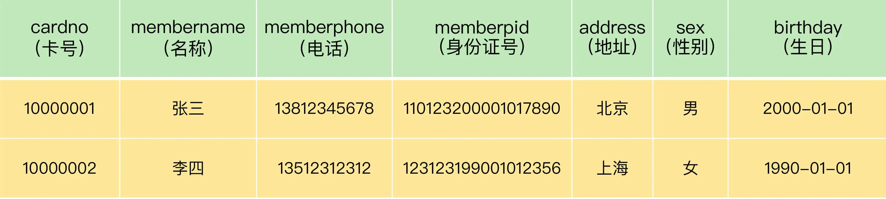

other2
如何正确的使用主键？¶
在超市项目中,需要对客户进行会员营销,有一张会员信息表 demo.membermaster 如何合理的对此表设置主键？唯一表示一个会员信息. 表的初步设计大体如下:

思路一: 业务字段做主键
建议不要用跟业务有关的字段做主键. 因为不晓得未来业务需求会不会导致字段值重复或重用的情况.
分析表字段, 不难判断出cardno卡号比较适合. PRI.
create table demo.membermaster(
-- cardno这里用char(8)有待商榷 int4个字节 char(8)因为都是数字,所以8个字节
cardno char(8) primary key, -- 会员卡号为主键
....
-- 电话和身份证号码 应该保留默认设置允许为空 因为这是个人隐私
-- 电话和身份证号码隐私是一方面
-- 另外若将其作为主键,需要更改时,所关联的外键信息也会同步更改..
-- 还不用提 与id做主键相比 树的高度问题
/*
手机号码看起来像是数字,本质是字符串! char(11) 11字节 ; bigint 8字节 ; varchar(11) 12个字节.
memberphone char(11), why?
手机号一般都要加索引 用bigint like模糊查询就失效了,不能用开头或尾号查询..
bigint在一些32位应用中可能会有溢出问题 很麻烦. int也表示不了11位..
memberpid char(18),
*/
memberphone TEXT,
memberpid TEXT,
sex enum('男','女'),
...
-- 除了主键字段其余设置为空 是因为当时不知道,可以稍后补齐.. 看具体的业务场景.
)
有什么问题吗？这样一个场景,张三因为搬家不会在此门店消费啦,退出会员. 店家修改卡号10000001的信息给王五.
系统不会出错,但业务层面会有问题. 因为有张销售流水表,demo.trans. 修改卡号信息给王五后,查看卡号10000001的消费流水 里面记录是张三的..不是王五的. 张三的消费行为放到王五身上去了,肯定是不对的
注意: demo.trans表有两个可以设置外键的字段itemnumber,cardno 对应商品信息表goodsmaster和会员信息表membermaster

思路二: 使用自增字段做主键
单表单库的时候用自增字段做主键没有问题！！分库分表的话自增字段就没办法保证全局唯一了！
-- 删除表 卡号的主键约束
ALTER TABLE demo.membermaster DROP PRIMARY KEY;
-- 给会员信息表添加id字段作为主键 并自增
ALTER TABLE demo.membermaster ADD id INT PRIMARY KEY AUTO_INCREMENT;
-- 修改销售流水表，添加新的字段 memberid，对应会员信息表中的主键
ALTER TABLE demo.trans ADD memberid INT;
-- 更新下销售流水表 memberid开始的时候为null
UPDATE demo.trans AS a,demo.membermaster AS b -- 两张表的有关系的更新！！
SET a.memberid=b.id
WHERE a.cardno = b.cardno; -- ！！！
这样的话, 回到修改会员卡10000001为王五之前的状态, 因为cardno不是主键, 我们就可以新增一条卡号为10000001的王五的信息.哪怕卡号重复了也无所谓... 查看消费记录就不会出叉了...
用添加自增字段作为主键的办法是可以的。但并不意味着在任何情况下都可以这么做。
有这样一个应用场景：客户一般都是在门店买东西的时候进行会员的办理的. 门店会通过系统<添加新增会员的功能>把新的会员信息先存放到本地 MySQL 数据库中,再上传到总部,进行汇总。
问题来了,如果会员信息表的主键是自增的,那么各个门店新加的会员就会出现“id”冲突的可能。
思路三:手动赋值字段做主键
通过一定的逻辑，确保字段值在全系统的唯一性. 规避主键重复的问题
取消字段id的自增属性, 总部维护一个当前会员编号的最大值。门店在添加会员的时候, 先到总部 MySQL 数据库中获取这个最大值, 在这个基础上加 1, 然后用这个值作为新会员的“id”, 同时, 更新总部 MySQL 数据库管理信息表中的当前会员编号的最大值。
1> Q: 会员编号id重复的问题,能否用门店号+id来解决.. A: 不建议通过给id增加与业务有关的信息解决问题, 门店编号也有可能重复或重用...
2> ID主键可以考虑使用varchar类型,使用UUID 或者雪花ID 生成随机字符串做主键
与雪花Snowflake相比UUID做主键
1- UUID 32位 Snowflake 64位
2- 不具备单调递增性. 比如评论表 若需要排序 还需要额外添加一个时间序列字段
3- 不具备业务含义
4- 是无序的. 有序ID可以提高数据写入性能 B+树
若主键是有序的,追加到最后面就行 无序的话 还要找到位置后再插入进去
参考链接: https://cloud.tencent.com/developer/article/1766264
3> 多个门店同时添加会员信息话,需要用到事务,防止别的连接读取到错误的信息
4> 总部要对max_id做权限控制,防止恶意修改. 也会涉及到加锁等问题.
5> 为啥能联网,门店还要将会员信息存在本地. 店家是联网了的！！ 不能因为网络不稳定导致每次添加会员不成而影响销售. 将max_id放在一张单独的配置信息表 里面只有这么一个字段 就是为了查询更快！汇总可以往后再汇总. 如果max_id不单独一张表的话 每次查总部的会员表的最大id可能是没及时汇总的id
6> 添加会员操作的频率还是比较低的,出现阻塞的风险不大.
题外话: 若有这样一个需求,将销售流水表 demo.trans 中,所有单位是“包”的商品的价格改成原来价格的 80%,该怎么实现呢？
UPDATE demo.trans AS a,
demo.goodsmaster AS b
SET
price = price * 0.8
WHERE
a.itemnumber = b.itemnumber
AND b.unit = '包'
/*
其实 相当于做了个内连接 只不过不是select语句 是update语句.. where条件也可以实现inner join的效果的.
select * from employee,department where employee.dep_id = department.id;
等同于
select * from employee inner join department on employee.dep_id = department.id;
*/